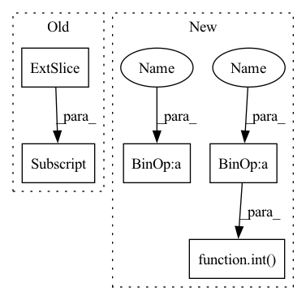

Pattern ID :25956
Before Change
grid_x = torch.clamp(grid_x + translation_x + 1, 0, x.size(2) + 1)
grid_y = torch.clamp(grid_y + translation_y + 1, 0, x.size(3) + 1)
x_pad = F.pad(x, [1, 1, 1, 1, 0, 0, 0, 0])
x = x_pad[grid_batch, :, grid_x, grid_y] .permute(0, 3, 1, 2)
return x
After Change
def rand_translation(x, ratio=0.125):
import pdb; pdb.set_trace()
shift_x, shift_y = int(x.size(2) * ratio + 0.5), int( x.size(3) * ratio + 0.5)
translation_x = torch.randint(-shift_x, shift_x + 1, size=[x.size(0), 1, 1], device=x.device)
translation_y = torch.randint(-shift_y, shift_y + 1, size=[x.size(0), 1, 1], device=x.device)
grid_batch, grid_x, grid_y = torch.meshgrid(
torch.arange(x.size(0), dtype=torch.long, device=x.device),In pattern: SUPERPATTERN
Frequency: 4
Non-data size: 5
Instances Fragment ID: 78412141
Project Name: postech-cvlab/pytorch-studiogan
Commit Name: 32579a1865b2a7829e766d8ce393609701382953
Time: 2020-08-23
Author: first287@naver.com
File Name: utils/diff_aug.py
M Class Name: AnonimousClass
N Class Name: AnonimousClass
M Method Name: rand_translation(2)
N Method Name: rand_translation(2)
M Parent Class:
N Parent Class:
M File Name: utils/diff_aug.py
N File Name: utils/diff_aug.py
M Start Line: 69
M End Line: 80
N Start Line: 70
N End Line: 81
Before Change
img *= 0.15
// Center crop
img = img[25:-25, 25:-25, :]
// Clip to [0, 1]
img += 0.5
img = np.clip(img, 0, 1)After Change
img *= 0.15
// Center crop
hh_crop, ww_crop = int( img.shape[0] * crop_border) , int(img.shape[1] * crop_border)
img = img[hh_crop:-hh_crop, ww_crop:-ww_crop]
// Clip to [0, 1] Fragment ID: 78412142
Project Name: leondgarse/keras_cv_attention_models
Commit Name: d411c57807dedc4b03ca737a6596ae6ecc429dd5
Time: 2022-01-07
Author: leondgarse@gmail.com
File Name: keras_cv_attention_models/visualizing/visualizing.py
M Class Name: AnonimousClass
N Class Name: AnonimousClass
M Method Name: __deprocess_image__(2)
N Method Name: __deprocess_image__(1)
M Parent Class:
N Parent Class:
M File Name: keras_cv_attention_models/visualizing/visualizing.py
N File Name: keras_cv_attention_models/visualizing/visualizing.py
M Start Line: 37
M End Line: 44
N Start Line: 31
N End Line: 39
Before Change
// if user supplies a mask that is only off by one from the source sequence, resolve it for them
mask = kwargs.get("mask", None)
if mask is not None and mask.shape[1] == x.shape[1]:
mask = mask[:, :-1]
kwargs["mask"] = mask
out = self.net(xi, **kwargs)
loss = F.cross_entropy(out.transpose(1, 2), xo, ignore_index = self.ignore_index)After Change
if self.mask_prob > 0.:
rand = torch.randn(inp.shape, device = x.device)
rand[:, 0] = -torch.finfo(rand.dtype).max // first token should not be masked out
num_mask = min(int( seq * self.mask_prob) , seq - 1)
indices = rand.topk(num_mask, dim = -1).indices
mask = ~torch.zeros_like(inp).scatter(1, indices, 1.).bool()
kwargs.update(context_mask = mask) Fragment ID: 78412143
Project Name: lucidrains/x-transformers
Commit Name: 595a4745d532c20b8ebd310256c342e946a4cef7
Time: 2022-11-02
Author: lucidrains@gmail.com
File Name: x_transformers/autoregressive_wrapper.py
M Class Name: AutoregressiveWrapper
N Class Name: AutoregressiveWrapper
M Method Name: forward(2)
N Method Name: forward(2)
M Parent Class: nn.Module
N Parent Class: nn.Module
M File Name: x_transformers/autoregressive_wrapper.py
N File Name: x_transformers/autoregressive_wrapper.py
M Start Line: 107
M End Line: 118
N Start Line: 122
N End Line: 142
Before Change
grid_x = torch.clamp(grid_x + translation_x + 1, 0, x.size(2) + 1)
grid_y = torch.clamp(grid_y + translation_y + 1, 0, x.size(3) + 1)
x_pad = F.pad(x, [1, 1, 1, 1, 0, 0, 0, 0])
x = x_pad[grid_batch, :, grid_x, grid_y] .permute(0, 3, 1, 2)
return x
After Change
def rand_translation(x, ratio=0.125):
import pdb; pdb.set_trace()
shift_x, shift_y = int( x.size(2) * ratio + 0.5) , int(x.size(3) * ratio + 0.5)
translation_x = torch.randint(-shift_x, shift_x + 1, size=[x.size(0), 1, 1], device=x.device)
translation_y = torch.randint(-shift_y, shift_y + 1, size=[x.size(0), 1, 1], device=x.device)
grid_batch, grid_x, grid_y = torch.meshgrid( Fragment ID: 78412144
Project Name: postech-cvlab/pytorch-studiogan
Commit Name: 32579a1865b2a7829e766d8ce393609701382953
Time: 2020-08-23
Author: first287@naver.com
File Name: utils/diff_aug.py
M Class Name: AnonimousClass
N Class Name: AnonimousClass
M Method Name: rand_translation(2)
N Method Name: rand_translation(2)
M Parent Class:
N Parent Class:
M File Name: utils/diff_aug.py
N File Name: utils/diff_aug.py
M Start Line: 69
M End Line: 80
N Start Line: 70
N End Line: 81
Before Change
// print(f"{ww = }, {hh = }, {cc = }, {num_patches = }, {valid_ww = }, {overlap_s = }")
// ww = 30, hh = 30, cc = 192, num_patches = 14, valid_ww = 28, overlap_s = 1
center = tf.reshape(pad_inputs[:, :valid_ww, :valid_ww, :] , temp_shape) // (1, 14, 2, 14, 2, 192)
ww_overlap = tf.reshape(pad_inputs[:, :valid_ww, overlap_s:valid_ww + overlap_s, :], temp_shape) // (1, 14, 2, 14, 2, 192)
hh_overlap = tf.reshape(pad_inputs[:, overlap_s:valid_ww + overlap_s, :valid_ww, :], temp_shape) // (1, 14, 2, 14, 2, 192)
corner_overlap = tf.reshape(pad_inputs[:, overlap_s:valid_ww + overlap_s, overlap_s:valid_ww + overlap_s, :], temp_shape) // (1, 14, 2, 14, 2, 192)After Change
// kernel_size, strides = 3, 2
// inputs = np.random.uniform(size=[1, 64, 28, 192])
kernel_size = sizes[1] if isinstance(sizes, (list, tuple)) else sizes
strides = strides[1] if isinstance(strides, (list, tuple)) else strides
if padding.upper() == "SAME":
pad = kernel_size // 2
pad_inputs = tf.pad(inputs, [[0, 0], [pad, pad], [pad, pad], [0, 0]])
else:
pad_inputs = inputs
_, hh, ww, cc = pad_inputs.shape
num_patches_hh, num_patches_ww = int( tf.math.ceil(hh / strides) - 1) , int(tf.math.ceil(ww / strides) - 1)
valid_hh, valid_ww = num_patches_hh * strides, num_patches_ww * strides
overlap_s = kernel_size - strides
temp_shape = (-1, num_patches_hh, strides, num_patches_ww, strides, cc)
// print(f"{ww = }, {hh = }, {cc = }, {num_patches_hh = }, {num_patches_ww = }, {valid_hh = }, {valid_ww = }, {overlap_s = }") Fragment ID: 78412146
Project Name: leondgarse/keras_cv_attention_models
Commit Name: c945694eeaf340f96627ec0155b9b26ddad5d30c
Time: 2021-10-08
Author: leondgarse@gmail.com
File Name: keras_cv_attention_models/common_layers.py
M Class Name: AnonimousClass
N Class Name: AnonimousClass
M Method Name: tpu_extract_patches_overlap_1(6)
N Method Name: tpu_extract_patches_overlap_1(6)
M Parent Class:
N Parent Class:
M File Name: keras_cv_attention_models/common_layers.py
N File Name: keras_cv_attention_models/common_layers.py
M Start Line: 180
M End Line: 214
N Start Line: 183
N End Line: 217